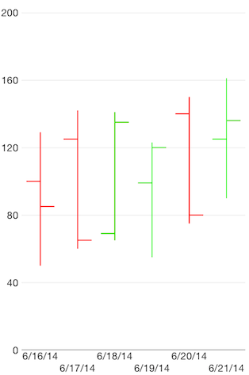

Chart Series: OHLC
TKChart supports Ohlc stock series. This series operates with a special kind of data in the form of four parameters defining the stock market - open, high, low, and close. Here is how to set up OHLC series:
Objective-C
NSArray *openPrices = @[@100, @125, @69, @99, @140, @125];
NSArray *closePrices = @[@85, @65, @135, @120, @80, @136];
NSArray *lowPrices = @[@50, @60, @65, @55, @75, @90];
NSArray *highPrices = @[@129, @142, @141, @123, @150, @161];
NSDate *dateNow = [NSDate date];
NSMutableArray *financialDataPoints = [[NSMutableArray alloc] init];
for (int i = 0; i < openPrices.count; i++) {
NSDate *date = [dateNow dateByAddingTimeInterval:60 * 60 * 24 * i];
TKChartFinancialDataPoint *dataPoint = [TKChartFinancialDataPoint dataPointWithX:date open:openPrices[i] high:highPrices[i] low:lowPrices[i] close:closePrices[i]];
[financialDataPoints addObject:dataPoint];
}
TKChartOhlcSeries *ohlcSeries = [[TKChartOhlcSeries alloc] initWithItems:financialDataPoints];
[chart addSeries:ohlcSeries];
TKChartDateTimeAxis *xAxis = (TKChartDateTimeAxis *)chart.xAxis;
xAxis.minorTickIntervalUnit = TKChartDateTimeAxisIntervalUnitDays;
xAxis.plotMode = TKChartAxisPlotModeBetweenTicks;
xAxis.majorTickInterval = 1;
Swift
let openPrices = [100, 125, 69, 99, 140, 125]
let closePrices = [85, 65, 135, 120, 80, 136]
let lowPrices = [50, 60, 65, 55, 75, 90]
let highPrices = [129, 142, 141, 123, 150, 161]
var dateNow = NSDate.date()
var financialDataPoints = [TKChartFinancialDataPoint]()
for var i = 0; i < openPrices.count; ++i {
var date = dateNow.dateByAddingTimeInterval(CDouble(60 * 60 * 24 * i))
financialDataPoints.append(TKChartFinancialDataPoint(x: date, open: openPrices[i], high: highPrices[i], low: lowPrices[i], close: closePrices[i]))
}
let ohlcSeries = TKChartOhlcSeries(items: financialDataPoints)
chart.addSeries(ohlcSeries)
let xAxis = chart.xAxis as! TKChartDateTimeAxis
xAxis.minorTickIntervalUnit = TKChartDateTimeAxisIntervalUnit.Days
xAxis.setPlotMode(TKChartAxisPlotMode.BetweenTicks)
xAxis.majorTickInterval = 1

Configure visual appearance of ohlc series
If you want to customize the appearance of ohlc series, you should implement the TKChartDelegate protocol as shown below::
Objective-C
- (TKChartPaletteItem *)chart:(TKChart *)chart paletteItemForSeries:(TKChartSeries *)series atIndex:(NSInteger)index
{
id<TKChartData> dataPoint = [series dataPointAtIndex:index];
TKStroke *stroke;
if ([dataPoint.close doubleValue] < [dataPoint.open doubleValue]) {
stroke = [TKStroke strokeWithColor:[UIColor redColor]];
} else {
stroke = [TKStroke strokeWithColor:[UIColor greenColor]];
}
TKChartPaletteItem *paletteItem = [TKChartPaletteItem paletteItemWithStroke:stroke];
return paletteItem;
}
Swift
func chart(chart: TKChart!, paletteItemForSeries series: TKChartSeries!, atIndex index: Int) -> TKChartPaletteItem {
var dataPoint = series.dataPointAtIndex(UInt(index))
var stroke: TKStroke
if dataPoint?.close!().doubleValue < dataPoint?.open!().doubleValue {
stroke = TKStroke(color: UIColor.redColor())
} else {
stroke = TKStroke(color: UIColor.greenColor())
}
var paletteItem = TKChartPaletteItem(stroke: stroke)
return paletteItem
}
